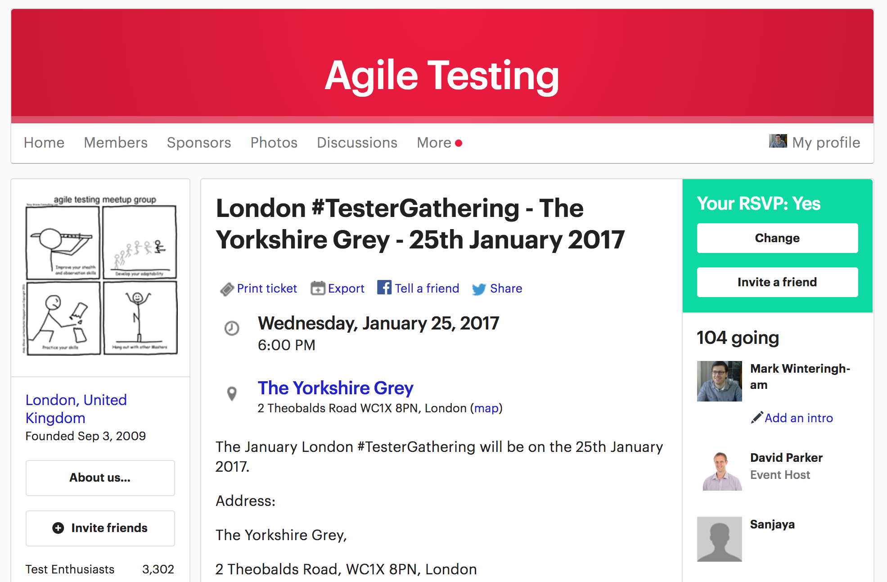
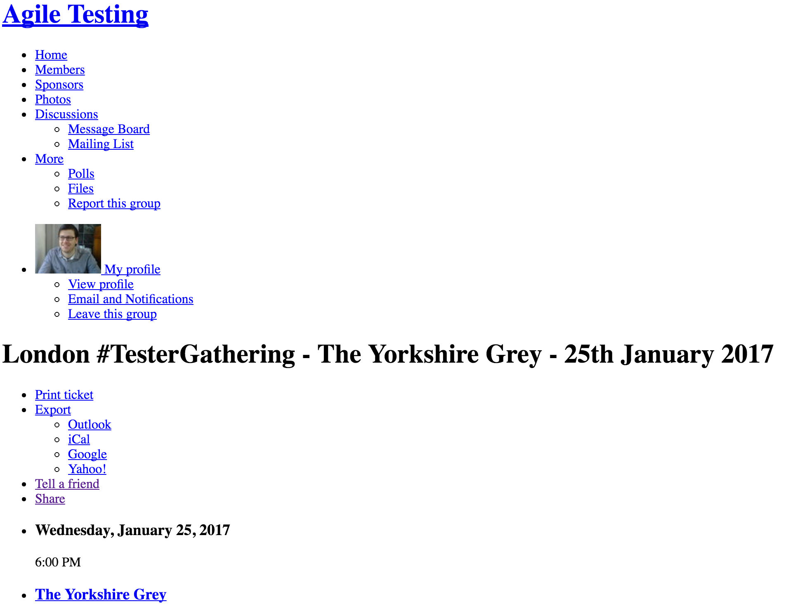
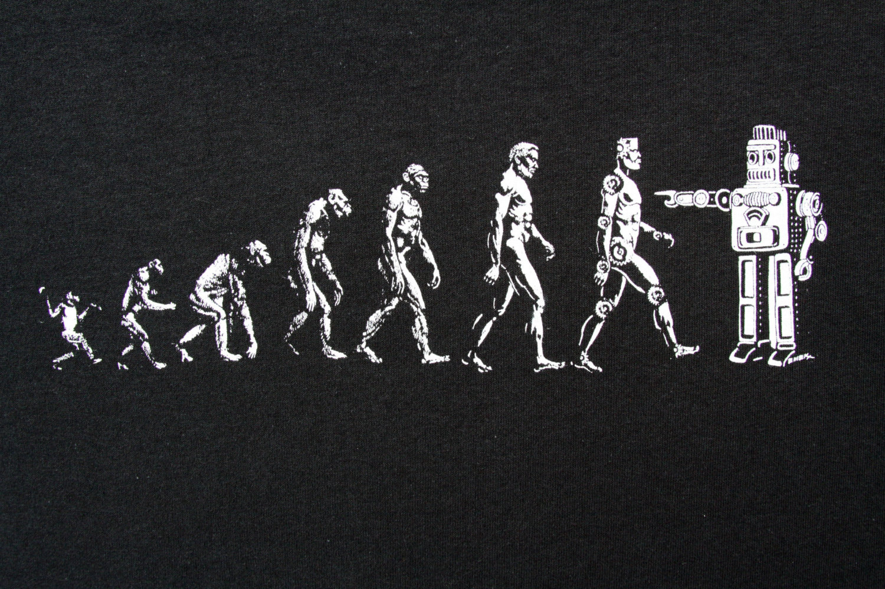
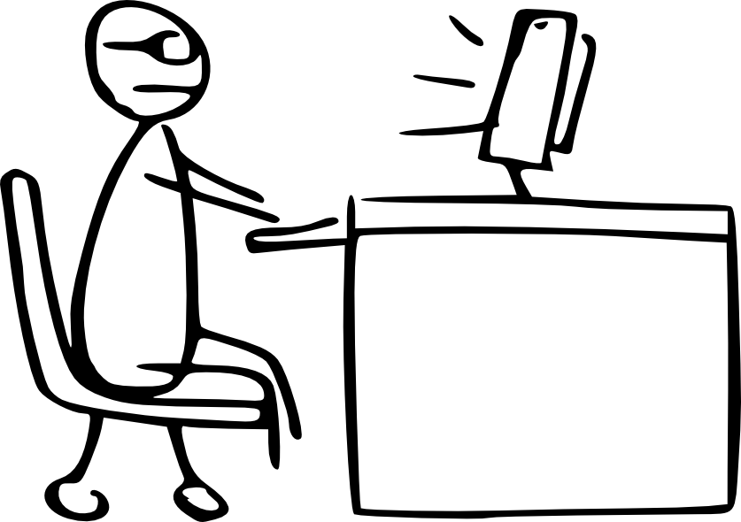
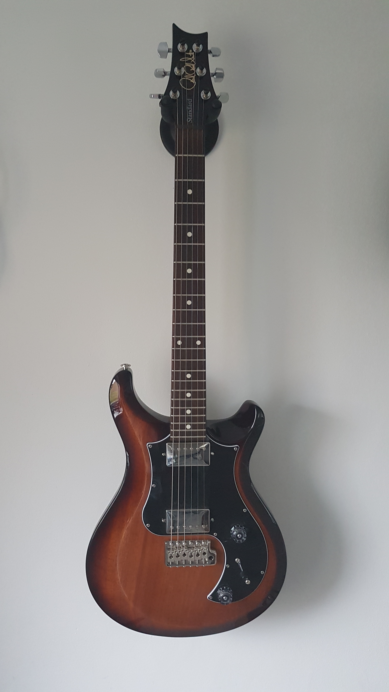

Liberation not replication: Automation to support testing not replace it - Created by Mark Winteringham / @2bittester © 2017
Liberation not replication:
Automation to support testing not replace it
Mark Winteringham
2bittester
mwtestconsultancy.co.uk
@2bittester
lnked.in/markwinteringham
What is the purpose of test automation?
Ask the audience
Refer to printed notes
Highlight some common terms
The focus is on trying to replicate testing
Automation in testing
is a means
to augment my testing
This definition is a work in progress
I use automation to liberate my testing and not replace it
Automation in testing is a mindset and it helps me in different ways


It encourages me to be critical of my tools
The value of tools in test automation is overestimated
For example asserting values retrieved from WebDriver with these two images results in the same output
I question and learn what my tools can and can't do
Knowing the strengths and weaknesses of tools help me strategise what to use and where to help me
User Tool
'If all you have is a hammer then everything looks like a nail' - The law of instruments
If I'm not critical of my tools then I it could lead to me attempting replicate my testing and expose myself to the potential risks
"We shape our tools and afterwards our tools shape us"
Marshall McLuhan
'If all you have is a hammer then everything looks like a nail' - The law of instruments
If I'm not critical of my tools then I it could lead to me attempting replicate my testing and expose myself to the potential risks
Enhance Reverse Retrieves Obsolesces
McLuhan's work is interesting to me as someone who uses tools
I was introduced to his work by Michael Bolton
McLuhan was a Canadian professor whose field of study was Media
What is relevant about his work is his Law of Media
Anything that augments or extends a humans ability is a media
So the tools we use as testers for automation are medias and we can look at their influences on us using the law of media
Enhancement (figure): What the medium amplifies or intensifies. For example, an API tool can increase my data driven testing
Obsolescence (ground): What the medium drives out of prominence. It may mean I have less use for other tools for data driven testing
Retrieval (figure): What the medium recovers which was previously lost. It may retrieve issues I wouldn't have found
Reversal (ground): What the medium does when pushed to its limits. It may mean that I have to spend hours reading through results and fixing code

The enhancement part of the law is very interesting. When I discussed with this with Michael he reminded me that a media can just as easily enhance bad work as good work
Therefore I need to be critical of how I test and how tools can work within that knowledge
Talk about the typical progression of a tester who automates
SDET / DIT
QA AUTOMATION SPECIALIST
QA SPECIALIST
AUTOMATION TESTER
AUTOMATION QA
AUTOMATION TEST ANALYST
TOOLSMITH!
We see this reflected in the role names for those responsible of automation
I am a toolsmith, creating and using tools to support and augment my testing

Data | State | Assert | Report
Automated
So I should be critical of my testing activities
Commonly automation design ignores thes nuances of what makes up a test
Resulting in the typical full stack automated checks that run e2e that we struggle with
Data | State | Assert | Report
Automate | Human | Human | Automate
AiT encourages me to look at what I do as a tester and break down the actions
Some can be automated easily, some can't

'Always let a machine do what a machine is good at, and never get a person to try and do that. And never try to get a machine to do something a person has to do'
Jack Higginbotham - www.youtube.com/watch?v=5mA6UVS-PWc
A guitar builder knows what a good guitar neck feels like and how it slots into the body of a guitar
Problems first, tools second
Finally AiT helps me to strategise
Knowing what I want to do as a tester in a specific context through deep analysis will present me with problems
If I know what the problem is, then I can start thinking about the tools I might want to use
The benefits?
Empowers testers to test rapidly
Supports your team as a whole
It's satisfying
Wrapping up
Automation should be used to augment our testing rather than replicate our current activites
Learn to be critical of your tools and your testing skills
There are many opportunities for automation in testing
Be a tester and a toolsmith
Questions?